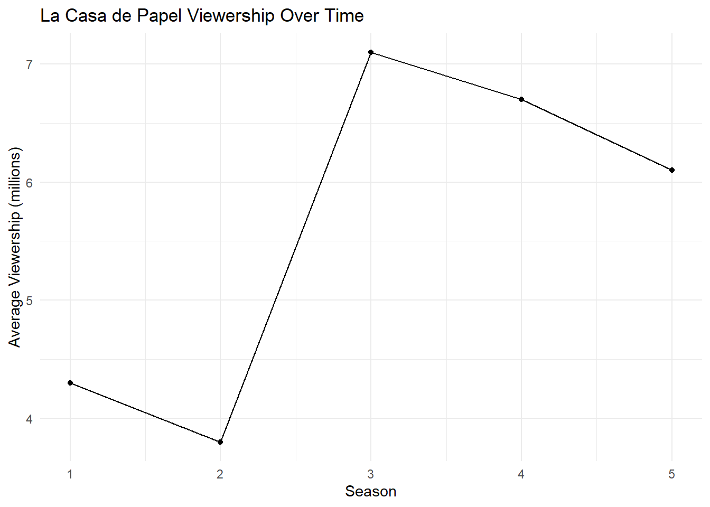

1 La Casa De Papel(Money Heist)
Money Heist (La Casa De Papel) is a Spanish drama-action television series created by Alex Pina. The series traces two long-prepared heists lead by Professor, one of them on Royal Mint of Spain and another one on the Central Bank of Spain, told from perspective of one of the robbers Tokyo.
2 Main Poster

3 Series and their views
| Season | Release Date | Views in millions |
|---|---|---|
| 1 | May 2, 2017 | 4.3 |
| 2 | October 16, 2017 | 3.8 |
| 3 | July 19, 2019 | 7.1 |
| 4 | April 3, 2020 | 6.7 |
| 5 | September 3, 2021 | 6.1 |
You can add options to executable code like this
viewership$Change <- c(NA, diff(viewership$Viewers_in_millions))
ggplot(viewership, aes(x = factor(Season), y = Change, fill = Change > 0)) +
geom_bar(stat = "identity") +
labs(title = "Change in Viewership Between Seasons",
x = "Season",
y = "Change in Viewership (millions)") +
theme_minimal() +
scale_fill_manual(values = c("red", "green"))Warning: Removed 1 row containing missing values or values outside the scale range
(`geom_bar()`).